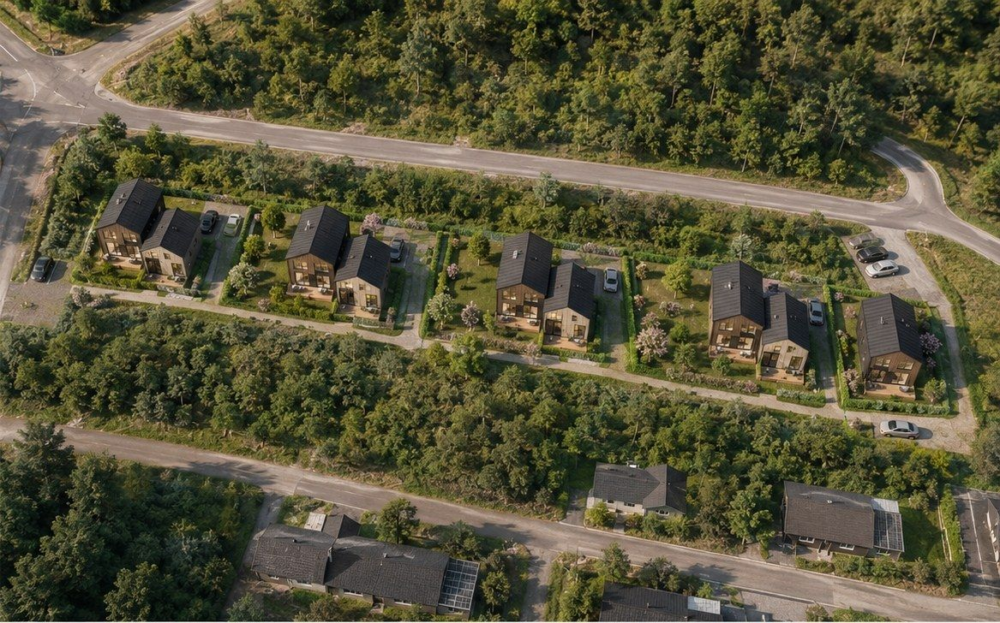
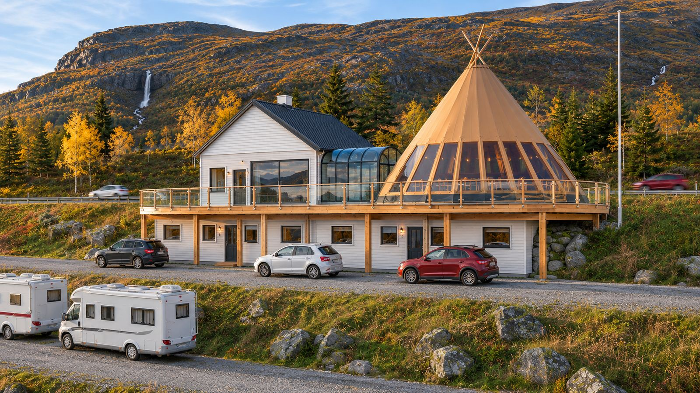

To prosjekter samlet for gjennomgang: åtte småhus på Rovdas og en storlavvo for samisk mat og kultur ved Sandnes Fjord Camping.
Alt på denne siden er utkast per 23.11.2026. Tegningene er skisser som ikke er kontrollert av fagkyndig. Rød tekst og «DATA MANGLER» viser opplysninger som ikke er bekreftet.
Skriv ut altÅpner begge prosjektene samlet i én PDF (39 sider, A4). Trykk på skriverikonet i PDF-visningen. Eller last den ned.
Rovdas: 8 småhus på gnr. 13 bnr. 172 til 175
Fire ubebygde eneboligtomter langs Juppyrevegen på Storslett. I stedet for fire eneboliger foreslås inntil åtte kompakte helårsboliger i to etasjer, to på hver tomt, med felles grøntdrag, gangsti og parkering på egen grunn. Veien videre er en mindre endring av reguleringsplanen for Rovdas 3 (pbl. § 12-14), eller et innspill til kommunens pågående planarbeid.

Illustrasjon av konseptet. Bildet viser ni hus; forslaget er inntil åtte, to per tomt. Ikke målbar.
Plankart i SOSI-format fra fagkyndig plankonsulent (pbl. § 12-3)
Gjeldende bestemmelser for Rovdas 3 (tallene i klammer)
Grunnbok og hjemmelshaver for tomtene
Ekte tomtegrenser og høydekoter (tegningene bruker forenklede rektangler)
Sol- og skyggestudie, VA-plan og slokkevann
Nabovarsel, valg av typehus og arkitekt
Sápmi Mat og Kulturarena: storlavvo ved Sandnes Fjord Camping
En storlavvo på 11 meter i diameter inntil resepsjonen ved E6 i Straumfjord, som helårs arena for samisk mat, reindriftskunnskap, lokal mat og kulturformidling. Den gamle serveringslavvoen knakk sammen under snølast. Søknad til Sametinget er sendt 03.11.2026 og oppdatert 16.11.2026. Kommunen tilbyr veiledning om byggesøknad.

Konseptillustrasjon. Den tilbudte lavvoen har åtte panoramavinduer, ikke glass rundt hele.